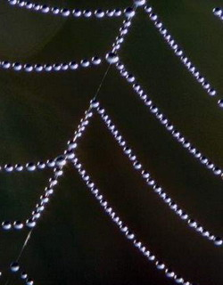

Ressources en Développement
Les psychologues humanistes !
Un poème de Nadine
dédié à l'ange qui veille sur elle..."
J’ai rêvé de la vie d’un peu plus de caresses
De douceur aux matins de mes nuits agitées
Où condamnée par la peur, le coeur en ivresse
Je m’éveille fragile, sans pouvoir avancer

Prête-moi ton épaule, je me sens immobileFigée par les mots que je ne peux exprimer
La beauté du langage qui me met en péril
Me propose un refrain maintes fois entamé
On me dit d’être forte, je voudrais m’écrouler
Ressentir les angoisses du passé qui m’habitent
Me permettre d’être libre, accepter d’être aimée
M’attendrir de ta voix qui jamais ne me quitte
Offre-moi ton sourire, j’ai besoin de rêver
Les nuages sont si doux pour mon âme en exil
Ils m’accordent le droit, de crier, de pleurer
De revenir au pays d’une époque plus fragile
Seuls les anges dans le ciel m’accompagnent dans le noir
Illuminent ma conscience de cette force qui sommeille
Me font vivre l’amour, me redonne l’espoir
Effacent de ma mémoire les souffrances de l’éveil
Effleure-moi de ta main, j’ai besoin de sentir
La présence immortelle d’un courage partagé
Pour qu’au loin j’aie la force de ne jamais revenir
Aux racines d’une vie, de peur et de fragilité
Mars 2002
Mauvais rêve
Prisonnière de l’enfance, enchainée par la peur
Libérée par les anges aux moments infidèles
En soulevant mon âme très haut dans votre ciel
J’ai oublié ce corps meurtri par la douleur
Je tuerais tous ces hommes qui ont volé ma vie
Que je voudrais revivre bercée jusqu’au matin
Libérée de vos griffes, soulagée du venin
Qui peu à peu se meurt au fil de ces écrits
Prisonnière de l’amour, le coeur plein d’illusions
Je croyais qu’être aimée devait me faire souffrir
Ressentir un grand vide où je voudrais mourir
Et m’éloigner du piège qui me sert de maison
Cent matins de tourmente, les yeux rivés au sol
Humiliée par le doute et l’incompréhension
Je me suis convaincue, par peur de l’abandon
D’un affreux mauvais rêve, sur la route de l’école
Prisonnière de l’enfance, encerclée par les loups
Terrifiée par le noir, rejetée de mon nid
J’ai appelé les anges pour espionner la nuit
Et pour mieux affronter la peur et le dégoût
J’aurai beau fuir au loin, pardonner le passé
Partir au bout du monde, me reconstruire une vie
Habiller les démons, de soie et de rubis
La douleur brûle en moi, peu importe où j’irai
Du creux de mon enfance, où je suis prisonnière
Les loups sont assoiffés de chair et d’innocence
Ils n’ont pas de pitié pour les rêves de l’enfance
Qu’ils détruisent à jamais, malgré les douces prières
Octobre 2002
| Voyez aussi Ravage et... Délivrance Recueil de poèmes humanistes (Préface de Jacques Salomé) par Michelle Larivey, psychologue-poète |
|
en discuter avec les autres lecteurs: La babillard électronique Infopsy ( Qu'est-ce que c'est ? ) |
|
| Tous droits réservés © 2004 par Ressources en Développement |